L'ISBN n'est pas une base de données
Pourquoi l'ISBN aide à identifier les livres mais ne remplace pas les systèmes de métadonnées, et comment fonctionne la chaîne de recherche de métadonnées dans le projet Let Books.
Lorsque vous tenez un livre imprimé, le code-barres au dos est l’identifiant le plus visible qu’il porte. Cet identifiant est l’ISBN — le Numéro International Normalisé du Livre. Dans les catalogues de bibliothèques, les boutiques en ligne et les systèmes de métadonnées, il fonctionne souvent comme une clé de base de données. Mais un ISBN n’est pas une base de données, et le traiter comme tel entraîne de véritables problèmes dans les processus de don de livres.
Ce qu’est réellement un ISBN
Un ISBN est un identifiant unique attribué à une édition spécifique d’un livre publié. La norme actuelle, ISBN-13, utilise 13 chiffres avec un chiffre de contrôle pour la détection d’erreurs. L’ancien format ISBN-10 se trouve encore sur les livres publiés avant 2007.
L’ISBN identifie l’édition, pas l’œuvre. Par exemple, les 2e et 3e éditions du même manuel ont des ISBN différents. Un livre relié et un livre broché de la même œuvre ont des ISBN différents. Une traduction anglaise et l’édition originale française ont des ISBN différents.
C’est une précision utile — mais elle comporte des limitations importantes.

Un ISBN identifie les métadonnées de l’édition à gauche. L’exemplaire physique à droite — état, provenance, lieu de stockage, statut du don, photos — est suivi séparément dans le modèle de domaine de Let Books. Les deux sont liés mais ne sont pas la même chose.
Ce que l’ISBN ne peut pas faire
Tous les livres n’en ont pas
Les livres publiés avant 1970, les auto-éditions, les documents académiques à tirage limité et les livres de petits éditeurs n’ont souvent pas d’ISBN. Dans les collections patrimoniales académiques — sur lesquelles ce projet se concentre — les manuels d’avant 1970, les notes de cours et les documents imprimés localement sont courants et précieux.
L’ISBN ne décrit pas l’état
Une bibliothèque veut savoir si un exemplaire est endommagé par l’eau, annoté ou s’il lui manque des pages. L’ISBN ne donne aucune de ces informations. L’identifiant est le même pour un exemplaire impeccable et pour celui qui a été stocké dans un sous-sol humide pendant vingt ans.
L’ISBN ne décrit pas la provenance
À qui appartenait cet exemplaire ? A-t-il été recommandé par un professeur ? Porte-t-il la signature d’un précédent propriétaire ou un tampon de bibliothèque ? Quelle institution l’a détenu ? L’ISBN reste silencieux sur tout cela.
L’ISBN ne décrit pas l’emplacement
Pour un projet de don de livres, la deuxième question la plus importante après « qu’est-ce que c’est ? » est « où est-ce ? ». L’ISBN n’a pas de réponse. L’emplacement est une question logistique physique, suivie séparément dans la hiérarchie de stockage.
L’ISBN peut être erroné ou réutilisé
Des ISBN mal imprimés existent. Un même ISBN peut être accidentellement réutilisé par différents éditeurs. L’OCR peut mal lire les chiffres. Le chiffre de contrôle détecte les erreurs d’un seul chiffre, mais pas toutes.
Comment Let Books gère l’ISBN
docs/book-metadata.md définit une stratégie pratique de repli pour la recherche par ISBN. Le document indique aussi que ce flux fonctionne dans la démo alpha actuelle tout en servant de modèle pour l’application complète à venir :

- Normalisez et validez l’ISBN. Supprimez les espaces et les tirets, mettez le X en majuscule, validez le chiffre de contrôle.
- Interrogez d’abord Open Library via son API publique.
- Si Open Library ne renvoie pas de données utiles, interrogez l’API de métadonnées de Let Books.
- Si aucun fournisseur n’a de données, recourez à la saisie manuelle.
La saisie manuelle n’est jamais bloquée. Si tous les fournisseurs échouent — que ce soit en raison d’une erreur réseau, d’une limitation de débit ou d’une absence réelle de données — l’utilisateur peut saisir manuellement le titre, l’auteur, l’éditeur et l’année et continuer le catalogage.
La chaîne de repli est délibérément simple. Il n’y a pas de point de défaillance unique car aucun fournisseur n’est obligatoire. Chaque fournisseur est optionnel et indépendamment remplaçable.
Les références canoniques du dépôt pour cette chaîne sont docs/book-metadata.md et AGENTS.md. Si une démo ou une version précise de l’application implémente déjà une partie de ce flux, mentionnez-le uniquement comme état d’implémentation, et non comme preuve principale.
Pourquoi cela importe pour les dons de livres
Lorsqu’un donateur catalogue une collection de livres académiques, certains auront un ISBN et d’autres non. Les livres sans ISBN sont souvent les plus intéressants — éditions plus anciennes, documents publiés localement, compilations pour des cours spécifiques ou livres d’éditeurs de l’ex-Yougoslavie dont les identifiants n’ont jamais atteint les bases de données mondiales.
Le processus de catalogage ne doit pas pénaliser le donateur pour l’absence d’ISBN. Chaque fonctionnalité qui fonctionne avec la recherche ISBN doit également fonctionner sans : suivi de localisation, téléchargement de photos, exportation Excel, révision par lot. L’ISBN est une commodité, pas une exigence.
Ce principe est énoncé directement dans la spécification du projet dans AGENTS.md :
Spécification du projet, AGENTS.md : “Le modèle doit permettre des données incomplètes. L’ISBN n’est pas obligatoire.”
À quoi ressemble l’avenir
La chaîne de repli actuelle s’enrichira de nouveaux fournisseurs. Crossref, Wikidata, OpenAlex et COBISS sont des candidats. Chacun entrera dans la même chaîne : essayer dans l’ordre, mettre en cache agressivement, échouer élégamment.
Mais la chaîne elle-même n’est pas le but. Le but est de passer d’un livre physique à suffisamment de métadonnées pour qu’une bibliothèque puisse décider si elle veut le livre. L’ISBN aide, mais le système doit fonctionner lorsque l’ISBN n’est pas disponible.
L’ISBN est un identifiant utile. Ce n’est pas une base de données.